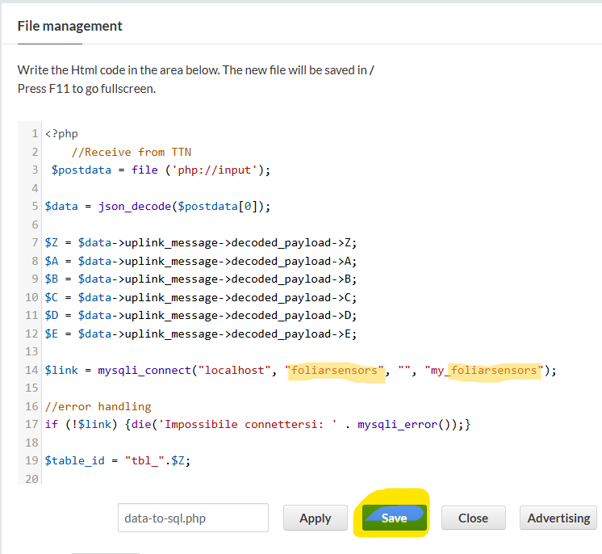

storing the data in the cloud
In the paragraph device registration on TTN we have seen how an end device (FylloClip module) is registered on the TTN network. With this we enabled the data flow from the device in the field to the TTN network server, provided of course that there is TTN coverage at the site, which means that there needs to be a LoRa-gateway connected to TTN somewhere in the area. On TTNmapper you can find out if there is already TTN coverage in a specific location. If not, you will need to install your own LoRa gateway and register it on TTN.
As already mentioned in device registration on TTN, the TTN network server cannot be used for storing data. But we can provide instructions for the data to be forwarded to another destination in the cloud where the data can b stored in a database. There are various approaches to achieve this goal, what is explained here is just one of them and consists in forwarding the data, which have already been formatted to a JSON object (according to the payload formatter inserted when creating the application on TTN), to another website which provides a hosting service. There are many free web hosting services out there, for this tutorial we use altervista.org.
As the first step, you need to create your own (free) account. Choose the option Hosting with file manager. Although there appears a monthly cost, there will be the option for a free account at the next step.
Type in the desired name of your website and see if it is available. Follow the procedure for registration and after receiving a confirmation e-mail you will be the proud owner of the new website.
Once the website is created, two further steps are needed, namely to set up the database and to add a script which will accept the data-packets coming in from the TTN network server and insert the data into the database.
Let’s first set up the database:
Once created the database access the PhpMyAdmin area. If you want, you can also activate the https protocol.
Within PhpMyAdmin we can now manage the database. Inside this database we need to create tables which will finally store the data. If you have several FylloClip modules, you will need a separate table for each one. You may remember that inside the Arduino code, which was uploaded to the microcontroller board, we specified the variable ID and assigned a value to this variable. Suppose this is your first module to which you assigned ID=1. The data of this module will end up in the table with the name tbl_1. But we have to create this table first.
The easiest way to achieve this is to access the SQL register and insert there the following code:
CREATE TABLE `tbl_1` (
`ID` int PRIMARY KEY,
`Server_Time` timestamp NOT NULL DEFAULT CURRENT_TIMESTAMP,
`A` int NOT NULL COMMENT 'L1',
`B` int NOT NULL COMMENT 'L2',
`C` int NOT NULL COMMENT 'C1',
`D` int NOT NULL COMMENT 'C2',
`E` float NOT NULL COMMENT 'Battery'
) ENGINE=MyISAM DEFAULT CHARSET=latin1;
Thereafter you will see on the left that a new table named tbl_1 has been added to the database. You can use the same script to add further tables, like tbl_2, tbl_3 and so on.
But how can our data reach a table in the database? First, we need to tell the TTN server to forward the data to our altervista website, then we need to have a small piece of code on altervista which will accept the data coming in from TTN and insert the values into the respective tables.
php script on altervista
Log into your altervista website and go to File management.
next, create a new php-file and give it a name:
inside the window, which will open, paste the following code and hit save:
<?php
//Receive from TTN
$postdata = file ('php://input');
//decode the JSON object and assign values to variables
$data = json_decode($postdata[0]);
$Z = $data->uplink_message->decoded_payload->Z;
$A = $data->uplink_message->decoded_payload->A;
$B = $data->uplink_message->decoded_payload->B;
$C = $data->uplink_message->decoded_payload->C;
$D = $data->uplink_message->decoded_payload->D;
$E = $data->uplink_message->decoded_payload->E;
//connect to database and insert values
$link = mysqli_connect("localhost", "foliarsensors", "", "my_foliarsensors");
//error handling
if (!$link) {die('Impossibile connettersi: ' . mysqli_error());}
$table_id = "tbl_".$Z;
$sql = "INSERT INTO $table_id
(ID, Server_Time, A, B, C, D, E)
VALUES (NULL, CURRENT_TIMESTAMP, $A, $B, $C, $D, $E);";
$retval = mysqli_query ($link, $sql);
//error handling
if(! $retval ){
die('impossible to execute the query: ' . mysqli_error());
}
//close connection to db
mysqli_close($link);
?>
Forwarding the data from TTN to altervista
This is achieved by specifying a path inside the TTN console which will channel the data to the above script. Go to the application you have already created and select integrations –> webhooks –> add webhook
next, choose custom webhook:
give the webhook a name and insert the address of your altervista website and then insert the name of the php-script which will later handle the the flow of the data into your database. At the bottom of the page, hit add webhook.
Now we should have everything in place for our dataflow to start…